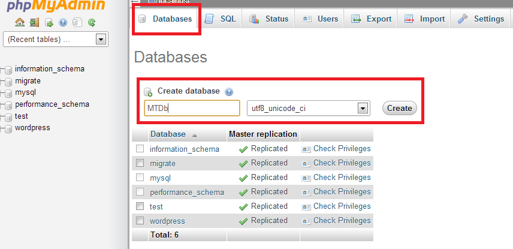
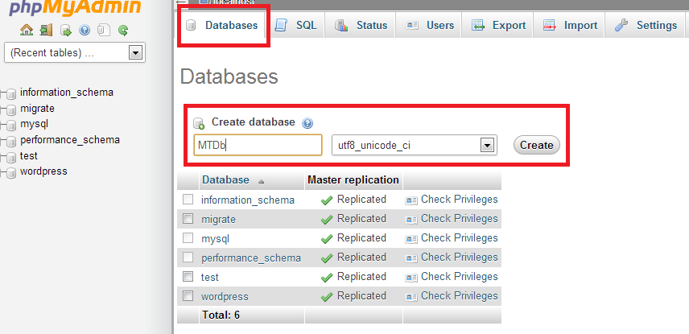

Creating a new database
First thing you want to do before installing MTDb is to create a new database on your mysql server. If you already know how to do this/or have already created one just skip to the next step.
Your host will most likely be running phpMyAdmin as mysql manager, if that's the case here's a step by step guide (if not the proccess will be very similar on other managers).
Login to your control panel, find and click phpMyAdmin link:  Click on the database tab in the top menu, enter any name you like and click create.
Click on the database tab in the top menu, enter any name you like and click create.
Uploading Files
After creating a database, unzpip the file you donwloaded and upload the contents of mtdb folder to your server root (usually called www or html or something similar), shared hosting providers usually have a web based file manager, but you should use something like Filezilla to do the upload as the web based managers cause various problems fairly often.
IMPORTANT! Make sure that .htaccess file got copied properly from the download to main mtdb folder on your server.
Installing MTDb
After you created a database and uploaded the files, simply open up your site in the browser and follow on-screen instructions to complete the installation.
Updating MTDb to new versions
- 1. Extract the .zip file you downloaded from CodeCanyon.
- 2. If you have made any translations, open up app/lang/en/main.php and app/lang/en/dash.php and copy the language lines marked with latest version to language files on your server, and then delete the app/lang folder from the download folder. If you didn't make any translations you can skip this step.
- 3. Upload and overwrite the rest of the files same way you did when you installed MTDb.
- 4. Visit http://yoururl.com/update to finish updating. (might not always need to do this step)
Titles, Actors and News Pages
These sections will provide you with a paginated table of that resource, here you can
- Click create new at the top to go to the resources creation page.
- Click update at the top to update the resource from available external data providers.
- You can filter the resource by name or other parameters by entering/select filter at the top bar.
- You can edit/delete the resource by clicking the trash can and wrench icons next to it.

Media Page
In the media page you can filter the images much like in other resource pages you can also:
- Upload new images by droping the files in the page directly from your desktop or clicking the select files button.
- You can get the fully qualified image link by clicking on the blue icon.
- permanently delete a file by clicking on a red icon in the right corner of the image.
Slider Page
In this page you can add/delete/modify the slides of main homepage slider. You can create slides completely from scratch or you can enter a titles name in populate slide data field and then click on one of the titles of movies/series that appear, this will populate current slide with the available data from your selected title in database.
Actions Page
Here you can fetch titles from IMDb or themoviedb in bulk. The first 2 panels will fetch only titles, while the third one will fetch all the information about titles like images, reviews etc. Simply enter how much titles you want to fetch and click Go. Also note that some hosts enforce request time or/and other limits so you might need to fetch titles in smaller batches.

Settings Page
Here you can change various settings of the site, all of them are explained on the page so you shouldn't have any problems understanding what they do, simply change what you want and click Submit at the bottom of the page.
Ads Page
Here you can enter your google or other services ads codes and google analytics code directly without needing to open up any files, Simply enter the codes (full ones with the script tags) in slot you want the ad to appear and click Submit at the bottom, note that some hosting providers don't allow saving of any javascript to database so if you see any errors that is most likely the cause.
Translating MTDb to your language
To translate MTDb to your language simply follow the steps below:
- Open app/lang folder
- Duplicate en folder and rename it to your desired language code, for example ru
- Open up any of the files in your newly created ru folder and enter your translations on the left side.
Creating/Editing Titles Manually
To create a new title go to dashboard titles page and click Create New at the top, to edit an existing one click the blue pencil icon next to the title you want to edit in the same page.
Once you are in the title create/edit page fill in the main title details in the first panel (You can get the image path for poster and background by clicking on Upload or select an image and then clicking the blue icon next to the image you want.
You can attach images to title by clicking Upload or select an image and simply selecting the image you want, you can detach an image by clicking on the red x next to an image in images tab
You can attach actors to a title by searching for them by name and then clicking on the result you want.
You can also attach directors and writer by entering theyr full name and clicking add on the right. After you filled out everything simply click save.
Creating/Editing News Manully
The proccess of creating/editing news is very similar to titles, with few differences:
- You have a fully featured WYSIWYG editor for news body.
- You can add images to the body by clicking upload or select an image and then clicking the image you want, it will be inserted at your cursor position in text editor.
Creating/Editing Actors Manully
Creating actors is pretty much the same as titles, except you can manage their filmography in the filmpgraphy tab.
Require Users to activate their account via email
Be default users will not need to confirm their account via email before being able to login, if you want to enable this functionality, you can do so in Dashboard > Settings > Require users to activate account via email field.
To make this work you will also need to configure your mail server so MTDb can send out emails, to do this open up app/config/.env file with a text editor and fill in the required information. You can use your gmail, yahoo etc account or you can use the one provided to you by your hosting probider.
Support
If you have any questions or issues regarding MTDb please use the support form on CodeCanyon to contact us! Note that comments on the MTDb page will be redirected to the support tab!
Social Login
To make social login work you will need to register for an application on Google, Twitter and Facebook, once you register for the application and receive your credentials you can enter them in app/config/.env file.
You can resgister for facebook app Here by clicking on App > Create new app at the top. Once you create the app you can find your id and secred in your app dashboard, you will also need to enter your site url in Settings > site url field
You can register for twitter app Here, after you register you will need to enter your site url in Website and Callback Url fields in your app settings, you can find your key and secret in the api keys tab.
You can register for google app Here by clicking on Create new project, after creating new project go to credentials tab and in the redirect uri field enter http://yoursiteurl/social/auth?hauth.done=Google, you might also need to enable Google plus and contacts APIs.